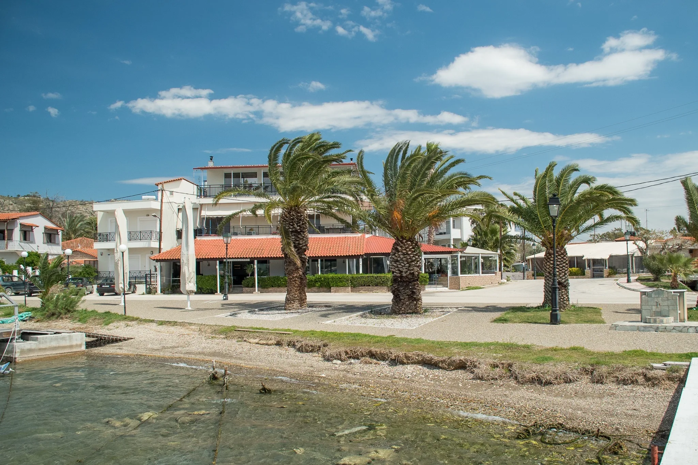
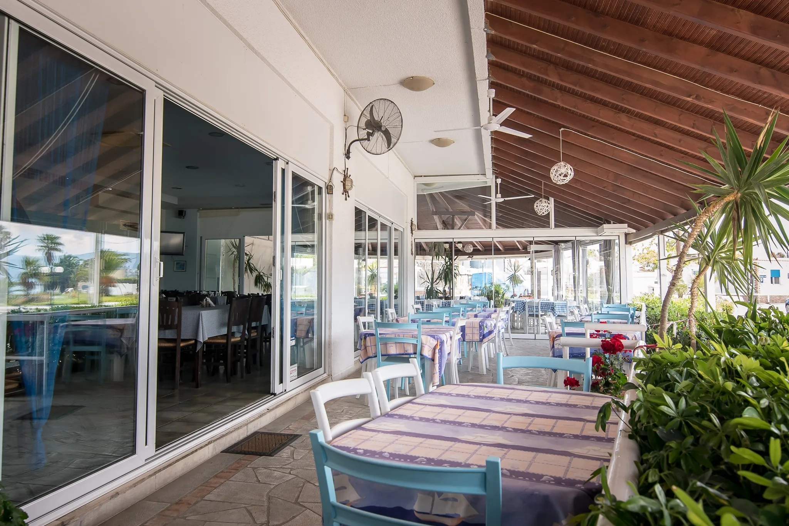

0%

ΨΑΡΟΤΑΒΕΡΝΑ ΑΠΟ ΤΟ 1924
Φρέσκα ψάρια, κάθε μέρα, από τα δικά μας καΐκια. Καλαμάκι, Ίσθμια — από το 1924.
ΚΑΘΕ ΜΕΡΑ ΦΡΕΣΚΟ ΨΑΡΙ
Το Τρεχαντήρι είναι μια οικογενειακή ψαροταβέρνα, τέσσερις γενιές τώρα. Ο Δημήτρης Μαγνήσαλης βγαίνει ο ίδιος κάθε μέρα στον Σαρωνικό με τα δύο μας καΐκια. Ό,τι πιάνει, το βρίσκετε στη βιτρίνα μας την ίδια μέρα.
Μάθετε την ιστορία μας →ΤΙ ΘΑ ΒΡΕΙΤΕ ΣΤΟ ΤΡΑΠΕΖΙ ΜΑΣ
Ό,τι έπιασε σήμερα ο Δημήτρης, ψητό στα κάρβουνα.
Καραβιδομακαρονάδα, φρέσκια κάθε μέρα.
Χταπόδι σχάρας, γαρίδες, μύδια, καλαμάρι.
Ταραμοσαλάτα, φάβα, τυροκαυτερή, σπιτικά.

Η ΑΤΜΟΣΦΑΙΡΑ ΜΑΣ
Ήρεμο φως, αλμυρός αέρας, το τραπέζι έτοιμο πριν καν καθίσετε. Καμία σκηνοθεσία — έτσι είναι το Τρεχαντήρι κάθε μέρα, χειμώνα καλοκαίρι.
Το τραπέζι σας, σχεδόν μέσα στη θάλασσα.
Από απλό ψάρι σχάρας μέχρι καραβιδομακαρονάδα για δύο.
Δύο καΐκια που βγαίνουν στη θάλασσα κάθε μέρα.
ΕΙΣΤΕ ΜΕΣΑ ΣΤΟΝ ΚΟΛΠΟ;
Αν είστε αγκυροβολημένοι στον κόλπο, πάρτε μας ένα τηλέφωνο. Περνάμε να σας πάρουμε, τρώτε στην ταβέρνα μας και σας γυρίζουμε πίσω.
Καλέστε μας: 27410 49315Μας λέτε πού είστε και πόσα άτομα.
Σας φέρνουμε στην ακτή, μπροστά στο μαγαζί μας.
Μετά το φαγητό σας επιστρέφουμε στο σκάφος σας.
ΔΕΙΤΕ ΖΩΝΤΑΝΑ
Ζωντανή εικόνα από το λιμανάκι μας, όποια ώρα κι αν σκέφτεστε να περάσετε.
Δείτε ζωντανά →